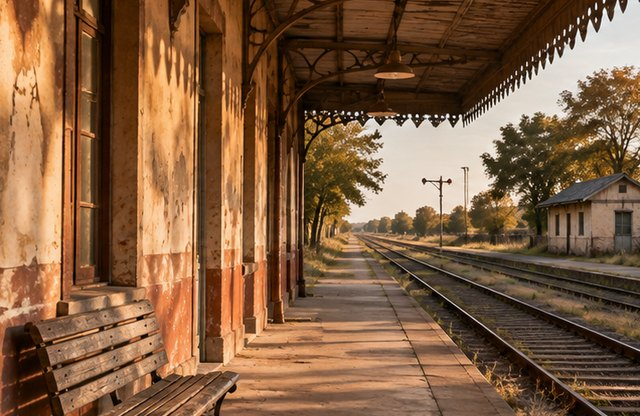
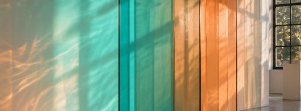
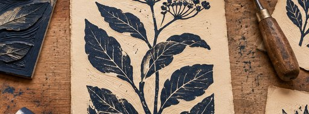

Destacada · Fotografía
Archivo del barrio
Fotografías y mapas del antiguo trazado ferroviario reconstruyen la historia de la Estación.
Sala Norte · 10:00-18:00
Programa del sábado · Entrada libre

Destacada · Fotografía
Fotografías y mapas del antiguo trazado ferroviario reconstruyen la historia de la Estación.
Sala Norte · 10:00-18:00

Instalación
Una instalación de vidrio que cambia con la luz.
Sala Sur · hasta las 16:00

Grabado
Grabados impresos en el taller del centro.
Sala Oeste · 12:00-18:00
Fotografías y mapas del antiguo trazado ferroviario.
Instalación de vidrio.
Grabados impresos en el taller del centro.
Correspondencia de vecinos de la Estación.
Abierta de 10:00 a 18:00.
Abierta hasta las 16:00. Último acceso a las 15:30.
Acceso por el patio.
Abierta de 12:00 a 18:00.
El sábado hay cuatro exposiciones con entrada libre. Ver exposiciones
La entrada accesible está en el patio. El aforo depende de la sala. Ver salas abiertas
Punto de encuentro junto a recepción.
Hay baños accesibles y una zona de descanso.